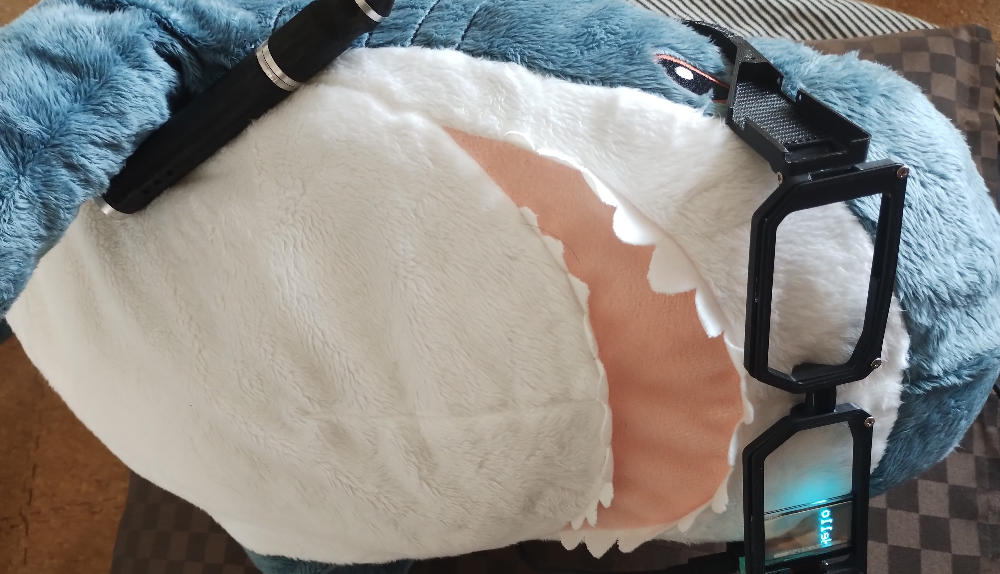

01 / ABOUT ME
ロボットに、
魅せられて。
つくることに夢中な、管理人のこと。

HELLO, I’M
ibuki.
ロボットに魅せられ、ロボットを作り続ける管理人です。
機構を考えるところから、回路、制御まで。
思い描いたものが動く、その瞬間が好きです。
ABOUT THIS PLACE
完成までの時間も、
ものづくりの一部。
ロボットのこと、つくってみたこと。
そんな日々の一片を、ここに残していきます。
01 / ABOUT ME
つくることに夢中な、管理人のこと。

HELLO, I’M
ロボットに魅せられ、ロボットを作り続ける管理人です。
機構を考えるところから、回路、制御まで。
思い描いたものが動く、その瞬間が好きです。
ABOUT THIS PLACE
ロボットのこと、つくってみたこと。
そんな日々の一片を、ここに残していきます。